Typologie à valider, 12 métiers
Un tableau de bord par expert
Chaque tableau est lu par la personne qui dirige le métier chez Unifood. Il montre d’abord les indicateurs du métier, puis les blocs de travail du quotidien, ce que l’expert a produit, ses livrables et ses apprentissages. Touchez un tableau pour l’ouvrir.
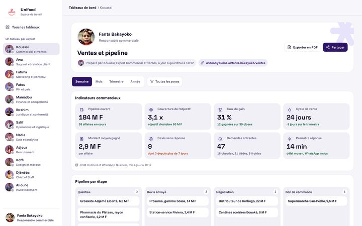

 Fanta Bakayoko
Fanta BakayokoResponsable commerciale, avec Kouassi
Ventes et pipeline
Pipeline en F CFA et couverture de l'objectif, taux de gain, devis sans réponse, demandes entrantes triées.
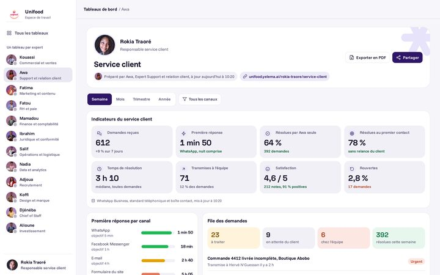

 Rokia Traoré
Rokia TraoréResponsable service client, avec Awa
Service client
Délai de première réponse par canal, résolution au premier contact, satisfaction, file des demandes et escalades.
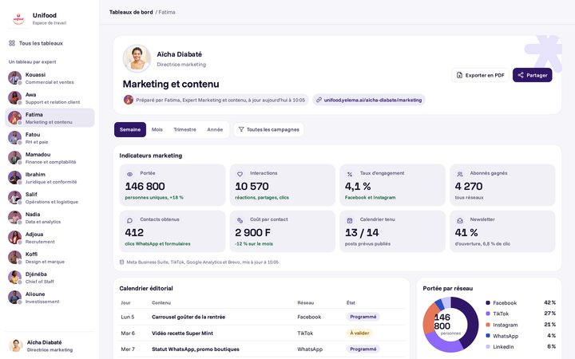

 Aïcha Diabaté
Aïcha DiabatéDirectrice marketing, avec Fatima
Marketing et contenu
Portée et engagement par réseau, contacts obtenus et coût par contact, calendrier éditorial, posts à valider.
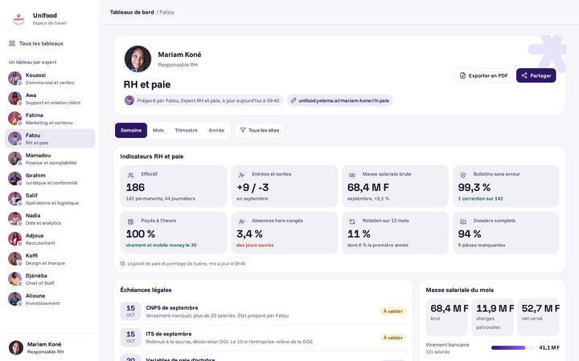
 Mariam Koné
Mariam KonéResponsable RH, avec Fatou
RH et paie
Effectif et masse salariale, paie de septembre fiabilisée, échéances CNPS et ITS, congés, fins de CDD.
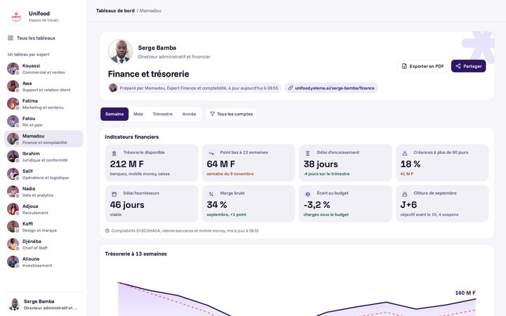
 Serge Bamba
Serge BambaDirecteur administratif et financier, avec Mamadou
Finance et trésorerie
Trésorerie banque, mobile money et caisse, point bas à 13 semaines, délai d'encaissement, balance âgée, échéances TVA et CNPS.
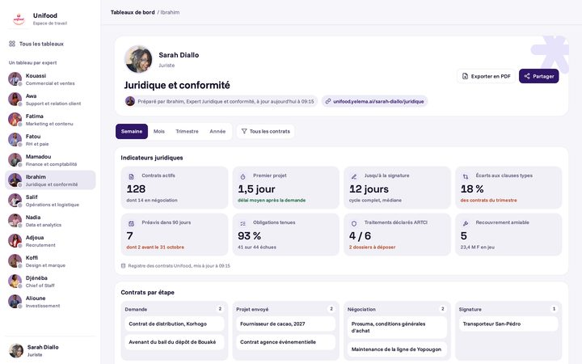

 Sarah Diallo
Sarah DialloJuriste, avec Ibrahim
Juridique et conformité
Contrats actifs et délais de traitement, écarts aux clauses types, renouvellements et préavis, conformité ARTCI, recouvrement.
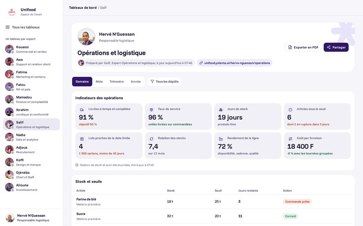

 Hervé N'Guessan
Hervé N'GuessanResponsable logistique, avec Salif
Opérations et logistique
Livraisons à temps et complètes, taux de service, jours de stock, ruptures, lots proches de la date limite, rendement de la ligne.
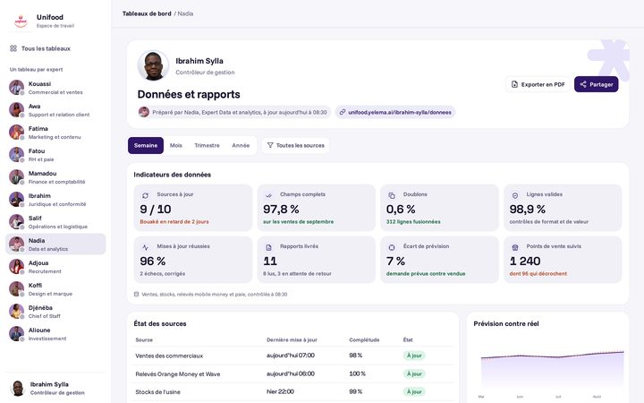

 Ibrahim Sylla
Ibrahim SyllaContrôleur de gestion, avec Nadia
Données et rapports
Fraîcheur et qualité des sources, rapports livrés et lus, prévision de la demande contre réel, classement des points de vente.
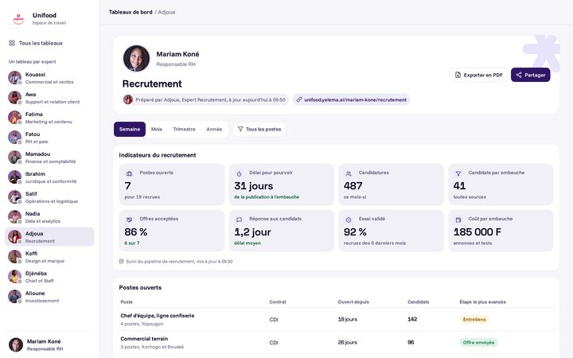
 Mariam Koné
Mariam KonéResponsable RH, avec Adjoua
Recrutement
Postes ouverts et délai pour pourvoir, entonnoir des candidats, offres acceptées, sources des recrues, entretiens à venir.
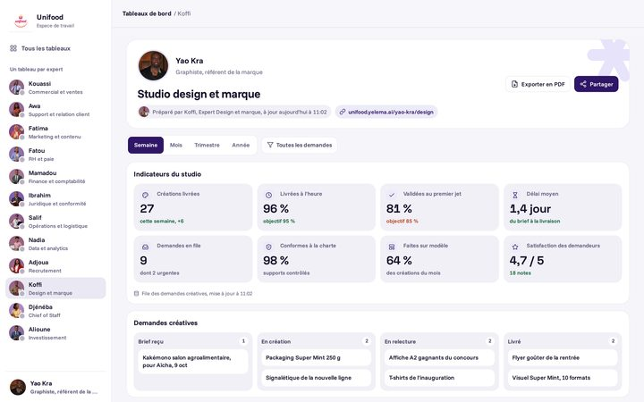

 Yao Kra
Yao KraGraphiste, référent de la marque, avec Koffi
Studio design et marque
Créations livrées à l'heure, validées au premier jet, demandes en file, conformité à la charte, bons à tirer.
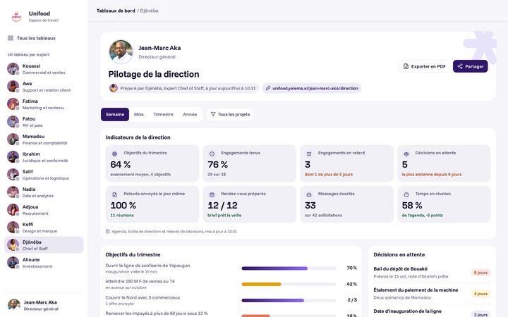

 Jean-Marc Aka
Jean-Marc AkaDirecteur général, avec Djénéba
Pilotage de la direction
Avancement des objectifs du trimestre, engagements tenus et en retard, décisions en attente, agenda préparé, boîte triée.
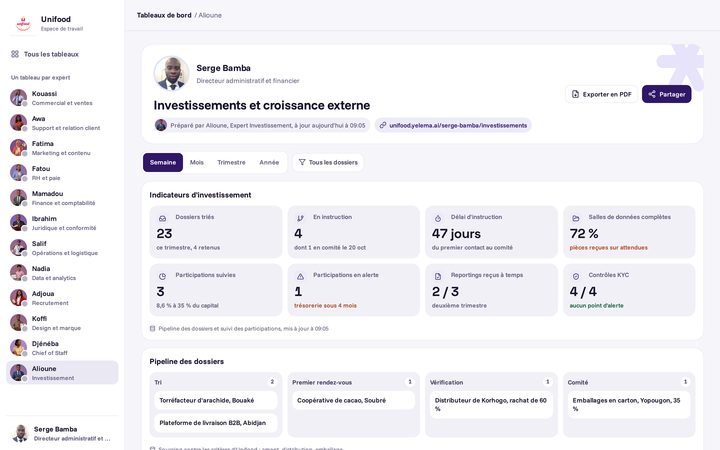
 Serge Bamba
Serge BambaDirecteur administratif et financier, avec Alioune
Investissements et croissance externe
Dossiers triés contre la thèse, pipeline jusqu'au comité, salles de données complètes, participations en alerte, financeurs.